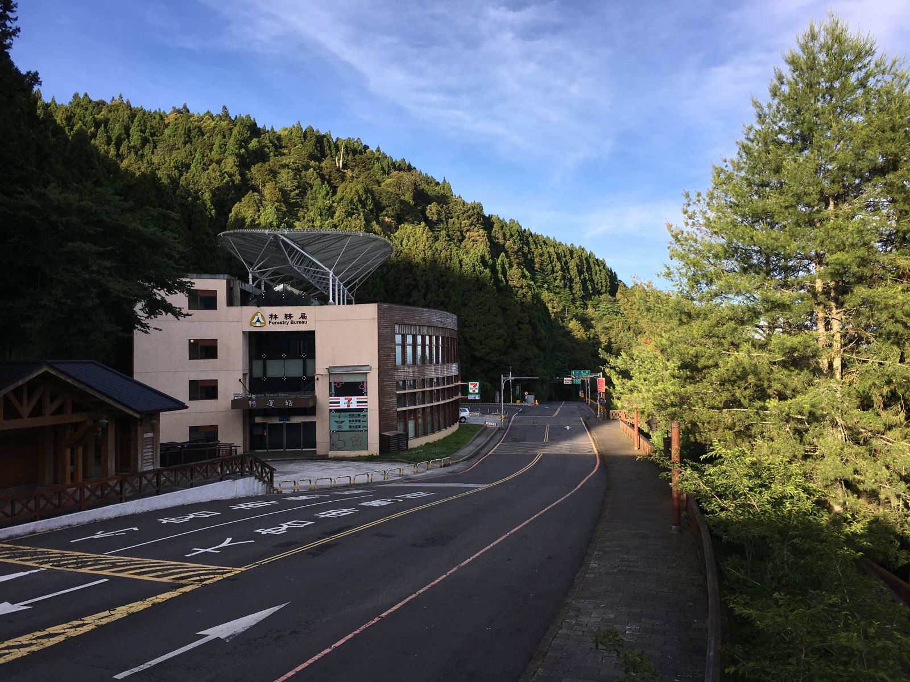
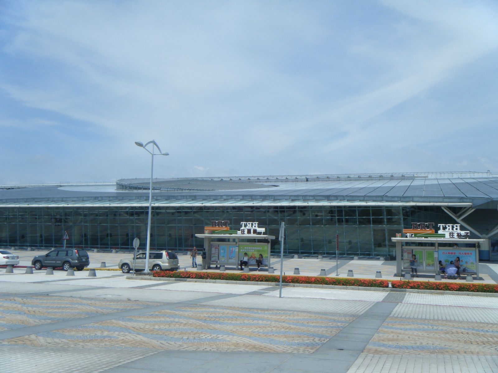
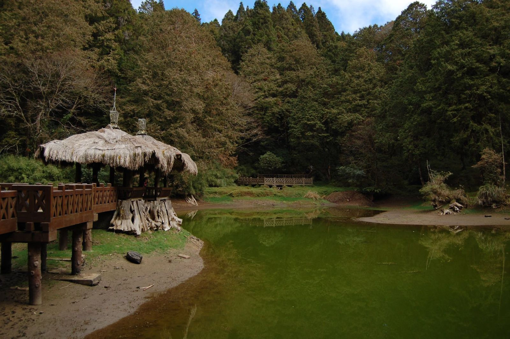

아리산 당일치기, 타이난에서 7329번 버스로 될까?
아침 8시 40분 버스로 올라가 오후 4시 40분 막차로 내려오면 산 위에서 5시간 반 — 시간표만 맞추면 하루 일정이 됩니다.
게시
아리산 당일치기, 타이난에 숙소를 두고도 가능할까요? 타이난에서 고속철로 자이역까지 간 뒤 7329번 버스로 올라가면 하루 안에 다녀올 수 있어요. 고속철 타이난역과 자이역은 바로 이웃한 역이라 아침 버스 시간만 맞추면 됩니다. 관건은 산에서 내려오는 버스가 하루 몇 대뿐이고 막차가 오후 4시 40분이라는 점이에요. 台灣好行 공식 시간표를 바탕으로 2026년 10월 기준 버스 시간과 타는 곳, 산 위에서 쓸 수 있는 시간을 정리해봤어요.
01 · 7329번 버스 시간표 한눈에 보기 (2026년 10월 기준)
| 고속철 자이역 출발 | 아리산 도착(예정) | 아리산 출발 | 고속철 자이역 도착(예정) | |
|---|---|---|---|---|
| 1 | 08:40 | 11:10 | 10:10 (奮起湖 경유) | 13:10 |
| 2 | 09:30 | 12:00 | 12:20 (奮起湖 경유) | 15:20 |
| 3 | 10:10 | 12:40 | 13:30 | 16:10 |
| 4 | 11:00 (奮起湖 경유) | 14:05 | 14:40 | 17:10 |
| 5 | 13:10 | 15:40 | 16:40 (막차) | 19:10 |
모두 매일 다니는 台灣好行 아리산선 A선(7329·7329A) 시간이에요. 오르막은 약 2시간 30분, 奮起湖를 거치는 편은 30분쯤 더 걸립니다. 당일치기라면 08:40에 올라가 16:40 막차로 내려오는 조합이 산 위에서 가장 오래(약 5시간 30분) 머무는 방법이에요. 막차를 놓치면 그날은 이 노선으로 내려올 수 없으니 16:40은 꼭 기억해 두세요. 요금은 방문 전 공식 안내를 확인하세요.

02 · 아리산 당일치기, 7329번 타는 곳과 내리는 곳
고속철 자이역 2번 출구 7번 승강장 공식 안내 기준 7329번은 고속철 자이역 2번 출구 쪽 7번 승강장에서 출발해요. 고속철에서 내려 바로 갈아탈 수 있습니다.
아리산에서는 轉運站 승강장 아리산 쪽 승하차는 삼림유락구 입구 매표소 오른쪽 앞의 아리산 轉運站이에요. 예전 정류장(세븐일레븐 대리 판매처)에서 옮겨졌으니 내려올 때 헷갈리지 마세요.
奮起湖 경유 편은 정류장이 달라요 2026년 8월 1일부터 奮起湖 정류장이 '第一停車場'으로 바뀌었어요. 중간에 奮起湖에 들를 계획이라면 이곳에서 타고 내립니다.
타이베이·타이중에서 온다면 B선도 있어요 일반열차(台鐵) 자이역 앞에서는 아리산선 B선이 출발해요. 고속철 자이역에서 BRT로 일반열차 자이역까지는 약 25분이라고 안내돼 있어요.
고속철로 자이까지 가서 7329번 버스로 2시간 30분쯤 올라갔고, 아리산에서 5시간 30분 정도 머문 뒤 16:40 버스로 내려와 고속철을 타고 20:06에 타이난에 도착했다는 기록이 있어요. — 네이버 카페 여행 기록을 요약했어요

03 · 좌석 예약과 결제, 미리 알면 편한 것
29일 전부터 좌석 예약 阿里山easy go, 嘉義縣公車處 예약 시스템, FamiTicket(全網) 또는 패밀리마트 FamiPort에서 탑승일 29일 전부터 예약할 수 있어요. 예약 구간은 출발역~아리산 轉運站처럼 기점과 종점 사이만 됩니다.
발차 10분 전 기사에게 체크인 예약표 QR을 발차 10분 전까지 기사에게 보여주고, 5분 전까지 체크인하지 않으면 줄 선 순서대로 자리가 넘어가요. 원래 편을 놓쳐도 그날 안에는 표를 들고 다른 편에 줄을 서서 빈자리에 탈 수 있습니다.
현금 말고 교통카드도 돼요 차내 현금 외에 이지카드(悠遊卡)·iPASS(一卡通)·icash, 悠遊付 등 QR 결제를 받는다고 안내돼 있어요.
아이 기준은 키로 키 115~150cm 어린이는 반표, 115cm 미만이거나 6세 미만이면 어른과 함께일 때 무료예요(어른 1명당 2명까지, 자리를 차지하면 반표).
큰 짐은 줄이기 관광버스가 아닌 일반 버스라 짐칸이 좁다고 안내해요. 당일치기라면 캐리어는 숙소나 역 보관함에 두고 가볍게 타는 편이 낫습니다.

04 · 타이난 출발 하루 동선 예시
아침: 고속철 타이난역 → 자이역 08:40 버스에 맞춰 고속철을 타요. 열차 시간은 고속철 공식 시간표로 정하고, 버스 체크인 시간까지 여유를 두세요.
11:10 무렵: 아리산 도착 산 위에서 약 5시간 30분이 생겨요. 쟈오핑선·선무선 같은 산속 열차와 거목 산책로를 고르면 됩니다. 원글은 안개 낀 선무역 쪽 풍경을 추천했어요.
16:40: 막차로 하산 轉運站 승강장에서 16:40 버스를 타면 고속철 자이역에 19:10 예정이에요. 아이나 부모님과 함께라면 14:40 편(17:10 도착)으로 당겨도 좋습니다.
저녁: 고속철로 타이난 복귀 산길은 공사나 통제로 늦어질 수 있어요. 돌아가는 고속철은 넉넉히 잡거나 현장에서 정하는 편이 안전합니다.
05 · 산길 버스, 이것만 조심하세요
도착 시간은 예상치예요 중간 정류장 시간은 예상일 뿐이고 공사·예방 통제가 있으면 늦어진다고 공식 안내에 적혀 있어요. 출발 전 台灣好行 버스 동태 시스템으로 실제 위치를 확인하세요.
화장실은 石棹에서 올라가는 길에 石棹 주유소에 잠시 서서 화장실을 쓸 수 있게 해 준다고 해요. 그날 도로 사정에 따라 다르니 필요하면 기사에게 미리 말하세요.
산 위는 쌀쌀해요 해발 약 200m에서 2,500m까지 올라가는 길이라 시내와 기온 차가 커요. 얇은 겉옷을 하나 챙기세요.
영업시간은 미리 확인 산 위 식당과 매점은 방문 전 구글맵에 등록된 영업시간을 확인하세요.
버스 시간표를 맞추고 갈아타는 게 부담스럽다면, 타이중·자이·가오슝에서 차량으로 데려다주는 아리산 일일투어도 있어요. 거목 숲길과 펀치후 옛 거리까지 하루에 둘러볼 수 있어 처음 가는 분께 편해요.
아리산 안에서 쟈오핑선 열차와 입장권 세트를 쓸 계획이라면 아리산 쟈오핑선 입장권 세트 교환법을, 산 위와 일월담에서 먹을 곳은 아리산·일월담 어디서 먹을까를 함께 보세요. 타이중에서 내려오는 일정이라면 타이중→타이난 일반열차 vs 고속철도 도움이 돼요. 출발 전후 끼니는 아리산·자이 맛집 지도와 타이난 대만 요리 맛집에서 고르고, 자이 시내에 들른다면 자이 처터우 훠지러우판(嘉義車頭火雞肉飯)도 있어요.
지도에서 아리산·자이 맛집도 확인해보세요
버스 타기 전후에 들를 곳을 지도에서 미리 골라 보세요.